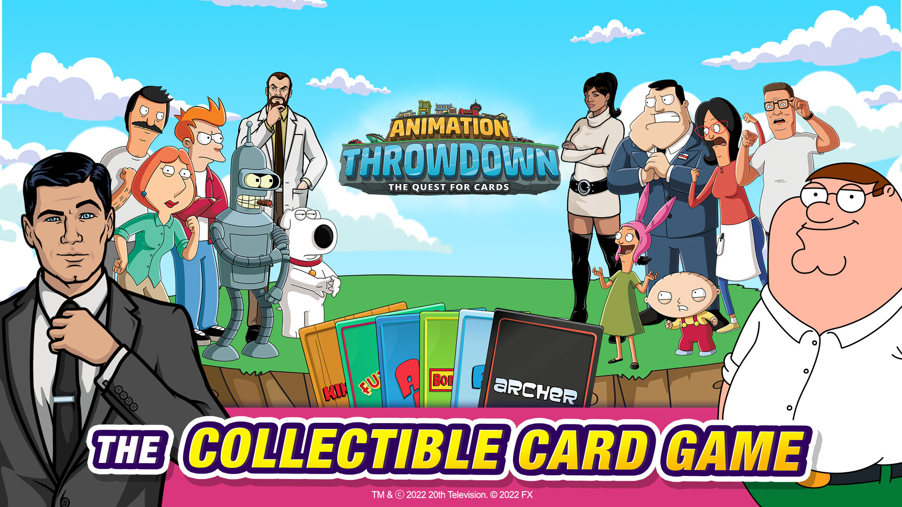
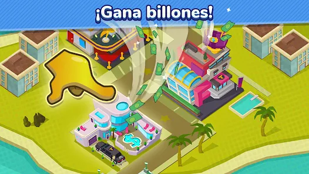
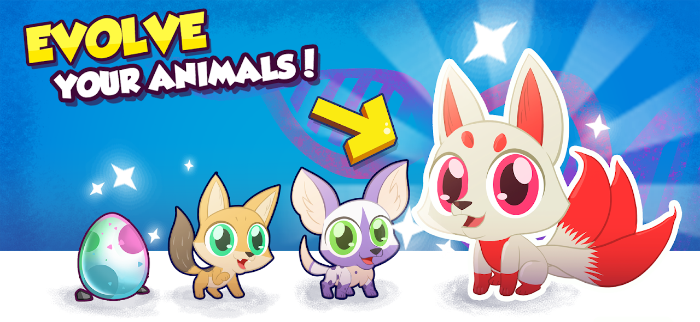
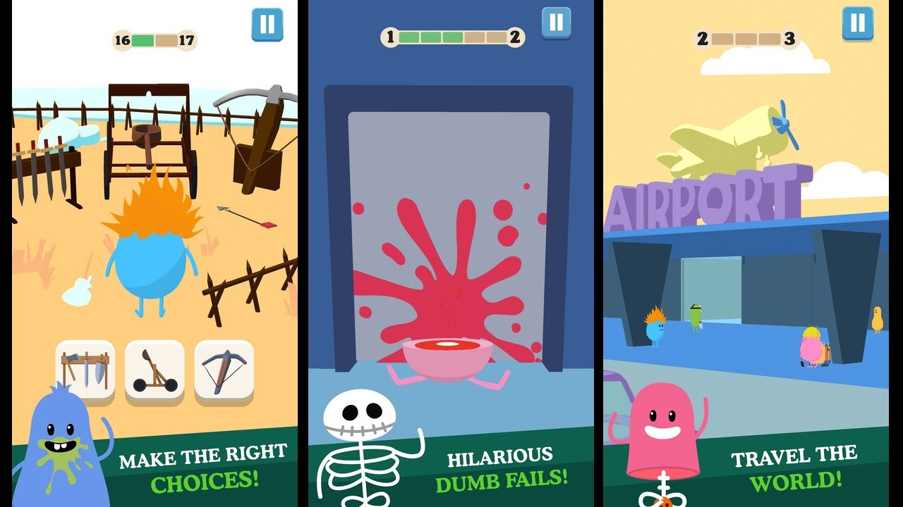

★ PLAYER PROFILE
Quality that players feel.
QA Functional Tester and Game QA Analyst / POC with experience validating mobile and web games, coordinating QA with cross-functional teams, and improving release confidence through structured testing.
◈ PROJECT SELECT
Games I've helped ship.
Projects where I contributed through functional testing, regression testing, validation, and cross-functional QA collaboration.




◉ PLAYER STATS
QA that moves releases.
100+Acceptance test suites & BVTs
35%Reduction in critical release blockers
98%Crash-free rate across validated builds
25%Faster bug detection through QA process improvements
◆ QA SKILL TREE
From risk to release.
01
Understand
Requirements, GDDs, acceptance criteria and feature intent.
02
Plan
Test coverage, risk areas, regression scope and release checks.
03
Execute
Functional, regression, BVT, acceptance and end-to-end testing.
04
Report
Clear reproduction steps, severity, evidence and defect lifecycle.
05
Validate
Fix verification, release-candidate checks and production readiness.
▲ PLAYER PROFILE
Technical mindset.
QA discipline.
I combine QA methodology with a technical background in Unity development. My experience includes mobile and web games, acceptance and regression testing, build verification, defect management, and asynchronous collaboration with distributed teams.
Functional TestingRegressionBVTAcceptance TestingTest PlanningDefect ManagementEnd to End TestingAgileUnityUnrealJiraNotionSlackGit / GitHub
▣ QUEST LOG
Experience.
RM2 Digital
Oct 2021 — Present
QA Functional Tester & POC
- Primary QA/Engineering/Design point of contact for a 10+ member cross-functional team.
- Created and executed 100+ acceptance suites, BVTs and release-candidate protocols.
- Validated Android, iOS and Web builds through functional, regression and end-to-end testing.
- Reduced critical release blockers by 35% and supported a 98% crash-free rate.
MadBricks
May 2022 — May 2025
QA Tester
- Refined testing methodologies and structured playtesting routines.
- Improved bug detection speed by 25% across production sprints.
- Reviewed GDDs and technical documentation to build detailed test plans.
Tangible Design
Feb 2021 — Sep 2021
Unity Developer & QA Analyst
- Supported interactive AR/mobile projects through functional testing during development.
- Created custom shaders and baked lightmaps, helping maintain 60 FPS rendering.
- Verified 3D environment assets for mobile integration using Blender and Substance.
★ OPEN TO REMOTE OPPORTUNITIES
Let's make quality
part of the game.
Game QA · QA Engineering · QA Analysis · POC